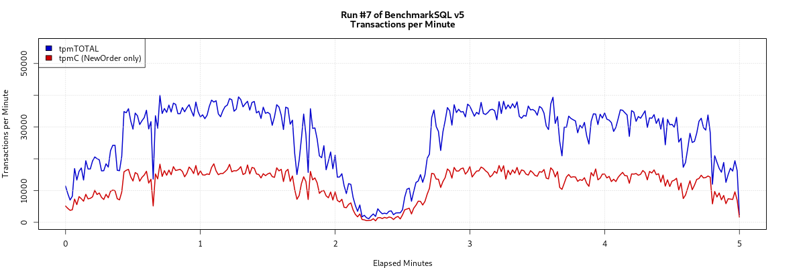
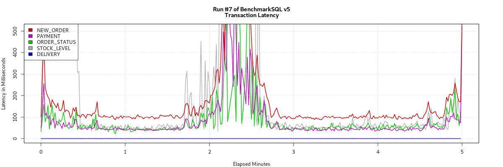

This TPC-C style benchmark run was performed by the "simple" driver of BenchmarkSQL version 5.0.
db=postgres
driver=org.postgresql.Driver
conn=jdbc:postgresql://localhost:5432/postgres
user=benchmarksql
password=******
warehouses=10
loadWorkers=4
terminals=50
//To run specified transactions per terminal- runMins must equal zero
runTxnsPerTerminal=0
//To run for specified minutes- runTxnsPerTerminal must equal zero
runMins=5
//Number of total transactions per minute
limitTxnsPerMin=0
//Set to true to run in 4.x compatible mode. Set to false to use the
//entire configured database evenly.
terminalWarehouseFixed=true
//The following five values must add up to 100
//The default percentages of 45, 43, 4, 4 & 4 match the TPC-C spec
newOrderWeight=45
paymentWeight=43
orderStatusWeight=4
deliveryWeight=4
stockLevelWeight=4
// Directory name to create for collecting detailed result data.
// Comment this out to suppress.
resultDirectory=my_result_%tY-%tm-%td_%tH%tM%tS
osCollectorScript=./misc/os_collector_linux.py
osCollectorInterval=1
//osCollectorSSHAddr=user@dbhost
osCollectorDevices=net_eth0 blk_sda
|
Note that the "simple" driver is not a true TPC-C implementation. This driver only measures the database response time, not the response time of a System under Test as it would be experienced by an end-user in a 3-tier test implementation.
| Transaction Type |
Latency | Count | Percent | Rollback | Errors | Skipped Deliveries |
|
|---|---|---|---|---|---|---|---|
| 90th % | Maximum | ||||||
| NEW_ORDER | 0.176s | 2.821s | 60529 | 45.041% | 1.003% | 0 | N/A |
| PAYMENT | 0.099s | 1.986s | 57672 | 42.915% | N/A | 0 | N/A |
| ORDER_STATUS | 0.094s | 0.989s | 5350 | 3.981% | N/A | 0 | N/A |
| STOCK_LEVEL | 0.157s | 10.221s | 5372 | 3.997% | N/A | 0 | N/A |
| DELIVERY | 0.000s | 0.001s | 5463 | 4.065% | N/A | 0 | N/A |
| DELIVERY_BG | 0.993s | 8.999s | 5463 | N/A | N/A | 0 | 0 |
| Overall tpmC: | 12105.80 |
| Overall tpmTotal: | 26877.20 |
The TPC-C specification has an theoretical maximum of 12.86 NEW_ORDER transactions per minute per warehouse. In reality this value cannot be reached because it would require a perfect mix with 45% of NEW_ORDER transactions and a ZERO response time from the System under Test including the database.
The above tpmC of 12105.80 is 9413.530% of that theoretical maximum for a database with 10 warehouses.
tpmC is the number of NEW_ORDER Transactions, that where processed
per minute. tpmTOTAL is the number of Transactions processed per
minute for all transaction types, but without the background part
of the DELIVERY transaction.


The percentages for User, System and IOWait CPU time are stacked
on top of each other.
We track the number of dirty kernel buffers, as measured by
the "nr_dirty" line in /proc/vmstat, to be able to correlate
IO problems with when the kernel's IO schedulers are flushing
writes to disk. A write(2) system call does not immediately
cause real IO on a storage device. The data written is just
copied into a kernel buffer. Several tuning parameters control
when the OS is actually transferring these dirty buffers to
the IO controller(s) in order to eventually get written to
real disks (or similar).